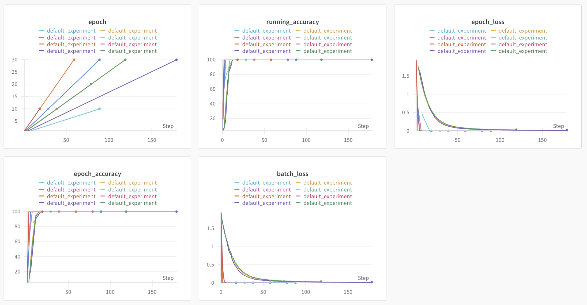
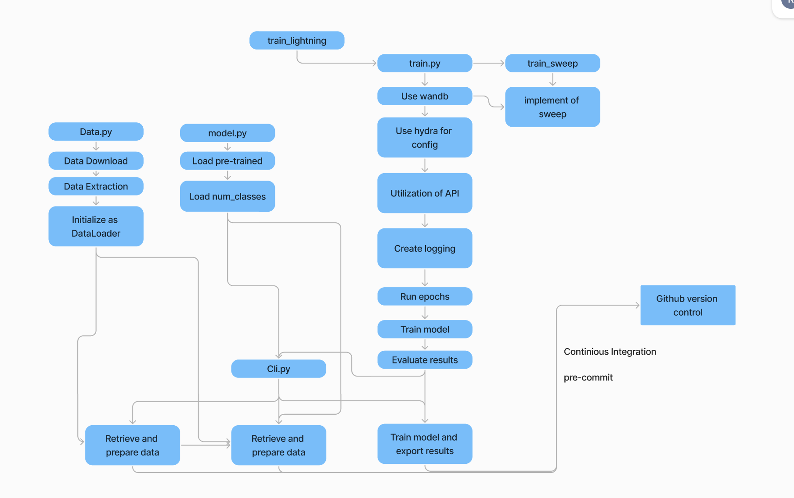

Operations
This is the report template for the exam. Please only remove the text formatted as with three dashes in front and behind like:
--- question 1 fill here ---
Where you instead should add your answers. Any other changes may have unwanted consequences when your report is
auto-generated at the end of the course. For questions where you are asked to include images, start by adding the image
to the figures subfolder (please only use .png, .jpg or .jpeg) and then add the following code in your answer:
markdown

In addition to this markdown file, we also provide the report.py script that provides two utility functions:
Running:
bash
python report.py html
Will generate a .html page of your report. After the deadline for answering this template, we will auto-scrape
everything in this reports folder and then use this utility to generate a .html page that will be your serve
as your final hand-in.
Running
bash
python report.py check
Will check your answers in this template against the constraints listed for each question e.g. is your answer too short, too long, or have you included an image when asked. For both functions to work you mustn't rename anything. The script has two dependencies that can be installed with
bash
pip install typer markdown
The checklist is exhaustive which means that it includes everything that you could do on the project included in the curriculum in this course. Therefore, we do not expect at all that you have checked all boxes at the end of the project. The parenthesis at the end indicates what module the bullet point is related to. Please be honest in your answers, we will check the repositories and the code to verify your answers.
data.py file such that it downloads whatever data you need and preprocesses it (if necessary) (M6) BJØRNmodel.py and a training procedure to train.py and get that running (M6) BJØRNrequirements.txt and requirements_dev.txt file with whatever dependencies that you
are using (M2+M6) BJØRN, ALEXANDERpep8) while doing the project (M7) BJØRN / ALEXANDEREnter the group number you signed up on
Answer:
Group 20
Enter the study number for each member in the group
Example:
sXXXXXX, sXXXXXX, sXXXXXX
Answer:
s224228, s224184, s225786
A requirement to the project is that you include a third-party package not covered in the course. What framework did you choose to work with and did it help you complete the project?
Recommended answer length: 100-200 words.
Example: We used the third-party framework ... in our project. We used functionality ... and functionality ... from the package to do ... and ... in our project.
Answer:
'PIL' (Pillow) was crucial for image processing, allowing us to resize, format, and preprocess the rice images. This was essential for standardizing the image data, ensuring consistency in size and format, which directly improved the model's ability to learn from visual inputs by providing it with uniformly processed training data. 'pathlib' streamlined our data pipeline by managing file paths in a more intuitive and platform-independent way. This library made it easier to navigate through our project's directory structure and ensure our code worked seamlessly across different operating systems, reducing errors related to file path inconsistencies. 'requests' was used to automate the download of the rice dataset from an external URL. During this download, 'tqdm' added a progress bar, which improved user experience by providing visual feedback on the download progress. We used 'streamlit' to develop an interactive web application, which allowed us to visualize and interact with our model's results in real-time. This was crucial for both our understanding of the model's performance and for presenting our findings. Lastly, 'datetime' was integrated into our logging system to timestamp log entries, which helped in tracking when experiments were conducted, enhancing our ability to monitor and debug over time.
In the following section we are interested in learning more about you local development environment. This includes how you managed dependencies, the structure of your code and how you managed code quality.
Explain how you managed dependencies in your project? Explain the process a new team member would have to go through to get an exact copy of your environment.
Recommended answer length: 100-200 words
Example: We used ... for managing our dependencies. The list of dependencies was auto-generated using ... . To get a complete copy of our development environment, one would have to run the following commands
Answer:
We used a combination between pip and conda to manage our dependencies. The combination between these provided a large source for packages, and made sure that there were no dependency issues. By organizing the packages in both a requirements.txt and a enviroment.yml file, it was possible to make the creation of the enviroment easier.
To use this code, and install the required packages, first it would be important to clone the github repository. Then the conda enviroment would be made "conda env create -f environment.yml". The enviroment is activated "conda activate rice" and the pip dependencies are installed "pip install -r requirements.txt".
By using the combination of conda and pip, and storing a list of the dependencies in either a requirements.txt and/or enviroment.yml, it was possible to make the execution of the enviroment easy and simple.
We expect that you initialized your project using the cookiecutter template. Explain the overall structure of your code. What did you fill out? Did you deviate from the template in some way?
Recommended answer length: 100-200 words
Example: From the cookiecutter template we have filled out the ... , ... and ... folder. We have removed the ... folder because we did not use any ... in our project. We have added an ... folder that contains ... for running our experiments.
Answer:
The cookiecutter provided in the lectures were initialized and the folder structure was used as the template for this project. The folder data, configs, models, reports, src and tests were used for this project. The only folder that was deleted was the "notebook", because it was not necessary. Different folders were added such as dockerfile and wandb to store the data that was generated and used by these applications.
This structure provided a good framework for our project, and organizing the different parts of the Machine Learning Operations technique. By using the src folder to develop the different methods for extracting, initializing, training and testing, and then using the data to gather the training data, created a good structure for organizing. The output was stored in output, and tests was stored in tests. This made it easy to find files and structure it.
Did you implement any rules for code quality and format? What about typing and documentation? Additionally, explain with your own words why these concepts matters in larger projects.
Recommended answer length: 100-200 words.
Example: We used ... for linting and ... for formatting. We also used ... for typing and ... for documentation. These concepts are important in larger projects because ... . For example, typing ...
Answer:
During our project, we implemented Black, Isort and Flask8. Black is used to automatically format code, to make all the code consistent. Isort automatically organizes and sorts the imports to keep the code organized. Flask8 is used as a linter to remove unused imports, syntax errors and styling violations.
Throughout our code, we implemented different static type checking, such that the data was structured in the correct way for the functions to operate correctly.
The code is also well-documented, and contains a short description of the purpose of the data, and how to use it. Steps include a comment on the reasoning behind it, such that the understanding of the code is easier.
In the following section we are interested in how version control was used in your project during development to corporate and increase the quality of your code.
How many tests did you implement and what are they testing in your code?
Recommended answer length: 50-100 words.
Example: In total we have implemented X tests. Primarily we are testing ... and ... as these the most critical parts of our application but also ... .
Answer:
In total, there were 7 different tests that was implemented to test the stability and integrity of our code. Primarily, we made tests for the RiceDataLoader, since it was important to verify it's ability to download, extract, load and transform to handle subsets and correct gathering of the data. Additionally, we made tests to test the train function for the data. These tests were focused around evaluating the ability to intialize, forward pass, save/load and perform training steps to ensure the model learned without any issues.
What is the total code coverage (in percentage) of your code? If your code had a code coverage of 100% (or close to), would you still trust it to be error free? Explain you reasoning.
Recommended answer length: 100-200 words.
Example: The total code coverage of code is X%, which includes all our source code. We are far from 100% coverage of our code and even if we were then...*
Answer:
Our total code coverage was calculated to be 11%. This percentage shows that it was a very small proportion of the code that was being tested, indicating major parts of the code remains untested, potentially still containing bugs and errors.
Even if the code coverage was calculated to be 100%, it would still not be sufficient to say that the code was free from errors. This is due to the fact, that the tests are looking for if the lines of code are being executed during the test, but does not verify the validity of the code. This leaves some uncertainty towards the validity of the tests.
In a complex code setup like this, small details can still make errors, even though the unit test is passed. Details such as logic, unintented behavior and edge cases are all examples of this.
Did you workflow include using branches and pull requests? If yes, explain how. If not, explain how branches and pull request can help improve version control.
Recommended answer length: 100-200 words.
Example: We made use of both branches and PRs in our project. In our group, each member had an branch that they worked on in addition to the main branch. To merge code we ...
Answer:
The implementation of working in branches and pull requests was done to some extend. The main idea is to work in different breaches, and when a bug is fixed, or a feature is developed, it is merged back to the main branch by performing pull request.
Different branches were intialized individually, such that it was possible to merge different areas of the Machine Learning Operations tasks together in the folder structures. This ensures that we were not working on the same code, and could focus on different areas of the project at the same time, while working in the same repository.
If we were interested in working on the same areas of the project at the same time, it would be sufficient to implement a more strict usage of branches and pull requests.
Did you use DVC for managing data in your project? If yes, then how did it improve your project to have version control of your data. If no, explain a case where it would be beneficial to have version control of your data.
Recommended answer length: 100-200 words.
Example: We did make use of DVC in the following way: ... . In the end it helped us in ... for controlling ... part of our pipeline
Answer:
Yes, we used DVC, but we didn't really get much benefit from it, because eventhough the dataset was large (75000 into 5 classes), the files weren't. It definitely helped with the quality control being faster, but we didn't transform any of the data, so there was no quality change, and we moved the dataset around from the original zip file, to its natural archive folder name to the raw template folder to the processed template folder, because of all this, it actually became a bigger pain in the ass, because not only did we need to change the path of the dataset, but we also suddenly got many changes in the DVC pointers. I think it works really well for the next project we do, because we had some structural difficulties, which we won't repeat again and especially if we do more data preprocessing/augmentation.
Discuss you continuous integration setup. What kind of continuous integration are you running (unittesting, linting, etc.)? Do you test multiple operating systems, Python version etc. Do you make use of caching? Feel free to insert a link to one of your GitHub actions workflow.
Recommended answer length: 200-300 words.
Example: We have organized our continuous integration into 3 separate files: one for doing ..., one for running ... testing and one for running ... . In particular for our ..., we used ... .An example of a triggered workflow can be seen here:
Answer:
We have organized our continuous integration into 5 seperate files: One for model control, one for data control, one for running docker, one for our unittests, and one for our API. They all are triggered by git pull or push but only on specific folders, except docker and API which is triggered on each push, which is a bad idea, when you have github email notifications on. They all either run on ubuntu latest or 20.04. We used either python 3.8 or 3.11. We did unittesting, linting, docker running and more. We tried to get multiple operating systems going and multiple python versions and also had a draft for the caching, however the biggest problem we have had throughout the course is that we kinda messed up our environment and thereby requirements.txt file, because we forgot to activate the specific environment and so we used each individual global environment and then pip freezed. which resulted in a lot of incompatibilities everywhere, i mean everywhere. Which made our CI for DOCker, multiple OS and unittests fail all the time. This is clearly reflected when analyzing our github actions, which all fail constantly, because of failing to install the correct dependicies. An example of a triggered workflow can be seen here https://github.com/RasDTU02/02476_FinalProject_Group20/actions/runs/12957220416/job/36145110643#step:4:29 https://github.com/RasDTU02/02476_FinalProject_Group20/actions/runs/12956905315/job/36144190876#step:4:120
In the following section we are interested in learning more about the experimental setup for running your code and especially the reproducibility of your experiments.
How did you configure experiments? Did you make use of config files? Explain with coding examples of how you would run a experiment.
Recommended answer length: 50-100 words.
Example: We used a simple argparser, that worked in the following way: Python my_script.py --lr 1e-3 --batch_size 25
Answer:
To implement the configuration of experiments, the different parameters were defined in a .yaml file, which allowed us to seperate different parameters into categories, which created a better structure. Then, these parameters were accesed by Hydra, which also managed these in our code.
In this project, two experiments were created in the folder "configs/experiments". Experiment 1 implemented more basic training parameters, such as learning rate and optimizer choice. Experiment 2 aimed to test different model architectures by configuring a different amount of hidden units in the layer.
Reproducibility of experiments are important. Related to the last question, how did you secure that no information is lost when running experiments and that your experiments are reproducible?
Recommended answer length: 100-200 words.
Example: We made use of config files. Whenever an experiment is run the following happens: ... . To reproduce an experiment one would have to do ...
Answer:
Different intiatives were used in order to make sure that there was no information that was lost.
Firstly, we implmented GitHub and Data Version Control. This was done to track the changes done in the data and code. This ensured the same version of the data across different runs of the code, consistent with the changes
YAML was used along with Hydra, to make sure that the parameters were stored and intialized in a structured and safe way. This created a system that systematically made it possible to change the parameters of the model.
Our setup also incldued logging. The use of logging makes it possible to keep track of the different results, and the time that they are created.
By using experimental tracking with Weights & Bias, it was possible to automatically log all experimantal details, including hyperparameters and model changes.
Lastly, the model also contained a seed, such that the model produced deterministic results, and that the change in performance was not due to randomness.
Upload 1 to 3 screenshots that show the experiments that you have done in W&B (or another experiment tracking service of your choice). This may include loss graphs, logged images, hyperparameter sweeps etc. You can take inspiration from this figure. Explain what metrics you are tracking and why they are important.
Recommended answer length: 200-300 words + 1 to 3 screenshots.
Example: As seen in the first image when have tracked ... and ... which both inform us about ... in our experiments. As seen in the second image we are also tracking ... and ...
Answer:

From the figure above, the wandb run of the sweep for the hyperparameters can be seen. Here, the epochs, running accuracy, epoch_loss, epoch_accuracy and batch_loss can all be seen in different plots. When initializing the different experiments, there has been a problem in overwriting the experiment name, and thus all the lines are called "default_experiment". For this reason, it has to be seen from the plot what the values are, and the specific experiment run does not contain the correct name.
Though from the plots, it can be seen that red line, which has the most epochs, is also the one which converges to a low accuracy the fastest. It can be seen that the lower the epoch size is, the slower the lines converge towards a global minimum or maximum.
It would be sufficient to run different experiments and show the graphs here, but due to the problem of the overwriting of names, it was problematic to show the curves of the different results at the same time, and this would lead to confusion. For further investigation into the different experiments, it would be sufficient to run the experiment, and investigate the log files and output to see how well it performed, instead of using wandb
Docker is an important tool for creating containerized applications. Explain how you used docker in your experiments/project? Include how you would run your docker images and include a link to one of your docker files.
Recommended answer length: 100-200 words.
Example: For our project we developed several images: one for training, inference and deployment. For example to run the training docker image:
docker run trainer:latest lr=1e-3 batch_size=64. Link to docker file:Answer:
For this project, a dockerfile was created to make a containerized application of running the entire pipeline with the default setting. The idea behind this dockerfile is to show how to model works, and what different proccesses are being executed. The default settings contain a 2 epoch training, and storing of the different logs for the performance of the model. The dockerfile also stored the model as a .pth file, such that the model can be reused.
To run the dockerfile, the docker needs to be built by running "docker build -t rice-classifier .". After this is done, you can execute the command "docker run rice-classifier". This will initialize and run the model.
When running into bugs while trying to run your experiments, how did you perform debugging? Additionally, did you try to profile your code or do you think it is already perfect?
Recommended answer length: 100-200 words.
Example: Debugging method was dependent on group member. Some just used ... and others used ... . We did a single profiling run of our main code at some point that showed ...
Answer:
We used different methods. First and foremost, we could often tell from the error code what was wrong, and then we went into the code and changed what was necessary. Additionally, we used the good old 'print'. We tried with loggers, but it was a new way for us to use them, so it has also been with the support of ChatGPT and Grok – these two language models have generally been a great help. We used profiling and have implemented it, but it was also sparingly, as we didn't have much experience with it but we could definitely see the potential of it! Therefore, next time when we have more time, we would absolutely use it on our project. We tried also using inline breakpoints a little, but this hasn't been a major necessity for us.
In the following section we would like to know more about your experience when developing in the cloud.
List all the GCP services that you made use of in your project and shortly explain what each service does?
Recommended answer length: 50-200 words.
Example: We used the following two services: Engine and Bucket. Engine is used for... and Bucket is used for...
Answer:
--- question 17 fill here ---
The backbone of GCP is the Compute engine. Explained how you made use of this service and what type of VMs you used?
Recommended answer length: 100-200 words.
Example: We used the compute engine to run our ... . We used instances with the following hardware: ... and we started the using a custom container: ...
Answer:
--- question 18 fill here ---
Insert 1-2 images of your GCP bucket, such that we can see what data you have stored in it. You can take inspiration from this figure.
Answer:
--- question 19 fill here ---
Upload 1-2 images of your GCP artifact registry, such that we can see the different docker images that you have stored. You can take inspiration from this figure.
Answer:
--- question 20 fill here ---
Upload 1-2 images of your GCP cloud build history, so we can see the history of the images that have been build in your project. You can take inspiration from this figure.
Answer:
--- question 21 fill here ---
Did you manage to train your model in the cloud using either the Engine or Vertex AI? If yes, explain how you did it. If not, describe why.
Recommended answer length: 100-200 words.
Example: We managed to train our model in the cloud using the Engine. We did this by ... . The reason we choose the Engine was because ...
Answer:
It was not possible for our model to be utilized in the cloud. The reason is due to several different factors. By implementing the model into a cloud system such as Engine or Vertex AI, it has to be compabitable with the eco-system for these platforms in order to function correctly. Different measures showed that the implementation of the model was inconsistent with the correct operational way, and therefore it was more safe to rely on the local storage of the model. Additionally, it was important to ackwoledge the size of our dataset. In these cases, it can become a bottleneck problem, since the handling of high concurrency loads can be a problem. By working in the format that was originally created, we ensured that our work remained stable and reliable.
Did you manage to write an API for your model? If yes, explain how you did it and if you did anything special. If not, explain how you would do it.
Recommended answer length: 100-200 words.
Example: We did manage to write an API for our model. We used FastAPI to do this. We did this by ... . We also added ... to the API to make it more ...
Answer:
We succesfully wrote an API for our model using FastPI, which a allowed us to create a restful interface. The API takes one of the saved model parameters through pytorch. The API includes an endpoint /predict that can accept an image file via a post request, where it then predicts the rice category. We did include a preprocessing step to ensure it had the correct dimensions 224 by 224 for our model and normalized it before inference. The API provided a interface via Swagger UI. For invalid inputs we fagged them with http codes and messages, which made rthe API quite simple and efficient
Did you manage to deploy your API, either in locally or cloud? If not, describe why. If yes, describe how and preferably how you invoke your deployed service?
Recommended answer length: 100-200 words.
Example: For deployment we wrapped our model into application using ... . We first tried locally serving the model, which worked. Afterwards we deployed it in the cloud, using ... . To invoke the service an user would call
curl -X POST -F "file=@file.json"<weburl>Answer:
We successfully deployed our API locally for testing and validation. Using FastAPI's uvicorn server, the API was hosted on http://127.0.0.1:8000. Locally, the API could be used using tools like curl. Example is testing the /predict endpoint, where we could use the command curl -X POST -F "file=@data\raw\Rice_Image_Dataset\Arborio\Arborio (1).jpg" http://127.0.0.1:8000/predict With this file, which is an Arborio, the model predicted a karacadag, which i think is explained by the normalization. We didn't deploy it to the cloud, however we tried to do a frontend and using onnx, but again the dependicies made it really tough to do so. Our next steps would involve containerizing the application with docker and deploying it on GCP using Cloud run, but at the moment the local deployment has already proven functional and stable.
Did you perform any unit testing and load testing of your API? If yes, explain how you did it and what results for the load testing did you get. If not, explain how you would do it.
Recommended answer length: 100-200 words.
Example: For unit testing we used ... and for load testing we used ... . The results of the load testing showed that ... before the service crashed.
Answer:
Yes, we performed both unit testing and load testing for our API. For unit testing, we used pytest to validate the /predict endpoint. This included testing valid and invalid inputs to ensure the API responded correctly in all scenarios. For example, we tested with valid image files and checked for expected predictions, while also handling non-image inputs gracefully.
For load testing, we used Locust to simulate concurrent users sending requests to the API. Our load test involved 10 users with a spawn rate of 2 users per second, sending requests to the /predict endpoint. The results showed the API could handle up to 10 concurrent users with an average response time of approximately 2020 ms before performance began to degrade. This indicates that the API is suitable for light to moderate traffic but might need optimization or scaling for heavier loads.
Did you manage to implement monitoring of your deployed model? If yes, explain how it works. If not, explain how monitoring would help the longevity of your application.
Recommended answer length: 100-200 words.
Example: We did not manage to implement monitoring. We would like to have monitoring implemented such that over time we could measure ... and ... that would inform us about this ... behaviour of our application.
Answer:
--- question 26 fill here ---
In the following section we would like you to think about the general structure of your project.
How many credits did you end up using during the project and what service was most expensive? In general what do you think about working in the cloud?
Recommended answer length: 100-200 words.
Example: Group member 1 used ..., Group member 2 used ..., in total ... credits was spend during development. The service costing the most was ... due to ... . Working in the cloud was ...
Answer:
--- question 27 fill here ---
Did you implement anything extra in your project that is not covered by other questions? Maybe you implemented a frontend for your API, use extra version control features, a drift detection service, a kubernetes cluster etc. If yes, explain what you did and why.
Recommended answer length: 0-200 words.
Example: We implemented a frontend for our API. We did this because we wanted to show the user ... . The frontend was implemented using ...
Answer:
We tried to implement a frontend for our API and we have kept the file, we tried to also use ONNX, however while trying to export my onxx model, we ran into a incompatible dependencies problem once again.
We implemented a drift detection service using Evidently. We simulated data drift by modifying our test dataset, introducing artificial changes to simulate real-world scenarios. This was integrated into our project to monitor data drift over time, ensuring our model's performance remains consistent despite changing data patterns. We achieved this by running 'data_drift.py' that compares our reference training data with the modified test data, generating a report that highlights any drift. This service helps us determine when model retraining might be necessary, enhancing our MLOps pipeline by providing proactive maintenance cues.
Include a figure that describes the overall architecture of your system and what services that you make use of. You can take inspiration from this figure. Additionally, in your own words, explain the overall steps in figure.
Recommended answer length: 200-400 words
Example:
The starting point of the diagram is our local setup, where we integrated ... and ... and ... into our code. Whenever we commit code and push to GitHub, it auto triggers ... and ... . From there the diagram shows ...
Answer:
This diagram shows the different python files, and how they are structured in order to collectively run all the different parts in the cli.py file. The different python files show how the code is structured, in order to make it possible to make the different parameter configurations. To do this, it was important to structure the code in segments in such a way that it was customizable to implement experiments and such. Furthermore, the diagram shows how the different iterations are being ran through GitHub and how continious integration and pre-commit is used to control the push of the code to the GitHub repository.
Through this structure of the repository, it was possible to make a system that showed an effective way to utilize and initiate the system. The steps shown in this diagram is the overall structure of the project, and provides the framework for our project. Additional details in this project are not shown here, because the level of complexity is limited in this diagram.
The main part of this project is the overall folder structure, which is difficult to see and examine through a diagram. For a deeper understand of this, it would be sufficient to look into the project files for a more clear overview.

Discuss the overall struggles of the project. Where did you spend most time and what did you do to overcome these challenges?
Recommended answer length: 200-400 words.
Example: The biggest challenges in the project was using ... tool to do ... . The reason for this was ...
Answer:
This project introduces different struggles and challenges to overcome in order to develop and deploy a model that successfully implement the method of Machine Learning Operations. During the project, there was a challenge for the functions to work across the different applications. It was important that the data structure was compatable with the functions that it was used for, and that it provided the correct output. Due to the complexity of the setup, it was difficult to always keep track of the small details, and it was therefore easy to overlook these.
The implementation of Cookiecutter helped to provide a folder-structure that supported the overall goal. But to get the hang of it, multiple errors needed to be made. Files ended up in the wrong folders, and had to be relocated in order to keep the integrity of the setup.
While implementing the sweep config for hyperparameter testing, different problems in relation to the retrieving of config values from Hydra became clear. This resulted in a deep dive into the variables defined, and making sure that they were consistent. It was then important to understand our structure of defining parameters, in order to overwrite these with hyper-parameters and/or test values.
When developing the different unit tests, it was difficult to find test cases, that had a complexity that was sufficient to make sure the code was intact, but it was also diffult to not introduce too much complexity due to the greater margin of error. The unit testing therefore took a lot of testing and revising, in order to create tests that was sufficient in investigating our data.
When setting up the logging, it was a struggle to keep the same timestamp for all the different subfolders. Often the logging time would be initialized in the moment of execution, and therefore create different timestamps for the same execution. This problem caused great confusion in the folder structure.
State the individual contributions of each team member. This is required information from DTU, because we need to make sure all members contributed actively to the project. Additionally, state if/how you have used generative AI tools in your project.
Recommended answer length: 50-300 words.
Example: Student sXXXXXX was in charge of developing of setting up the initial cookie cutter project and developing of the docker containers for training our applications. Student sXXXXXX was in charge of training our models in the cloud and deploying them afterwards. All members contributed to code by... We have used ChatGPT to help debug our code. Additionally, we used GitHub Copilot to help write some of our code. Answer:
The individual contributions of each team member can be seen on the checklist above.
If we encountered problems with the code, we used ChatGPT and Grok to help us debug, so we could continue coding. We have tried to stick to the coding we learned in the course, but to tailor it to our project, AI has helped us along the way. AI has been especially good at getting different codes to work together. Sometimes our comments were not specified accurately, so AI helped to make these statements more accurate and clear.
{kind=link}
{kind=link}
{kind=link}
{kind=link}
{kind=link}